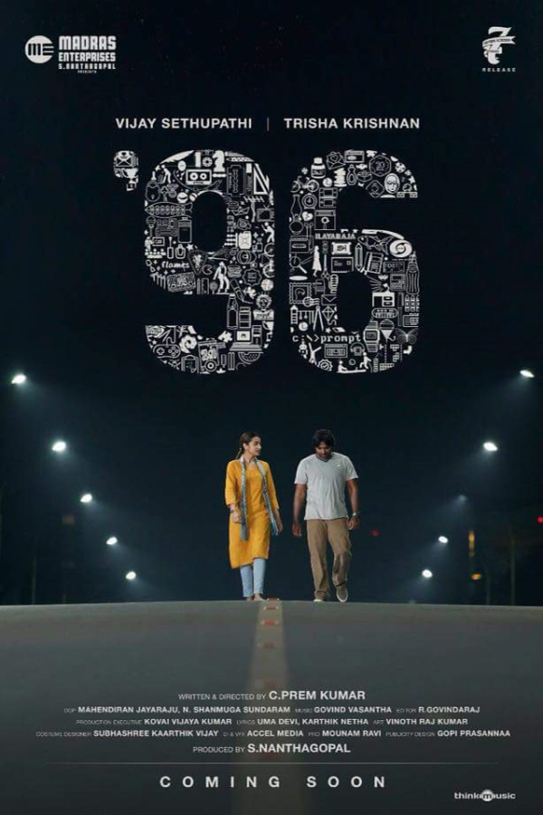
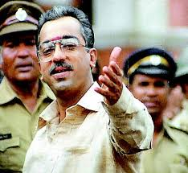
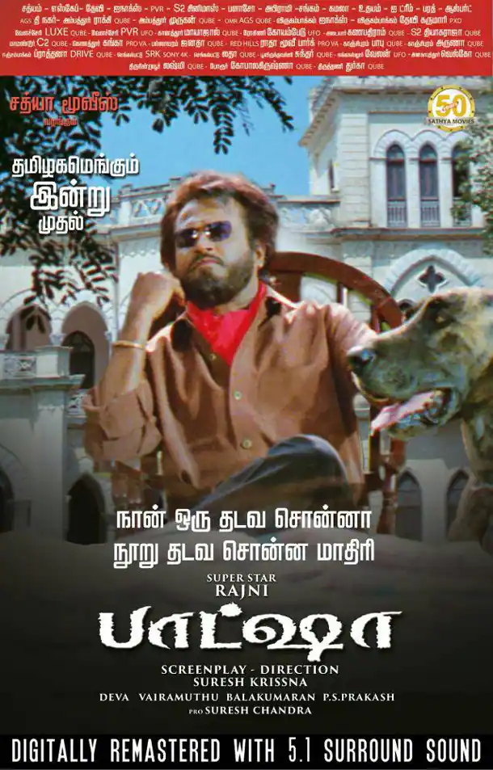
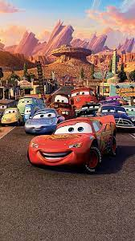

96
96 is a 2018 Indian Tamil-language romantic drama film written and directed by C. Premkumar. Produced by S. Nanthagopal of Madras Enterprises, the film was distributed by Lalit Kumar under his banner Seven Screen Studio. Starring Vijay Sethupathi and Trisha Krishnan in the prominent roles as Ram and Jaanu, while newcomers Gouri G. Kishan and Aadithya Bhaskar played the younger version. The film also stars with an ensemble cast includes Bagavathi Perumal, Devadarshini, Aadukalam Murugadoss and others. The film revolves around the reunion of former students from the batch of 1996, twenty-two years after their graduation. The reunion also serves as an opportunity for two former lovers, Ram and Jaanu, to resolve issues surrounding their breakup.
Marvel Movies

The Marvel Cinematic Universe (MCU) films are a series of American superhero films produced by Marvel Studios based on characters that appear in publications by Marvel Comics. The MCU is the shared universe in which all of the films are set. The films have been in production since 2007, and in that time Marvel Studios has produced and released 32 films, with at least 11 more in various stages of development. It is the highest-grossing film franchise of all time, having grossed over $29.6 billion at the global box office. This includes Avengers: Endgame, which became the highest-grossing film of all time at the time of its release
Nayakan
Nayakan (Translation:Hero) is a 1987 Indian Tamil-language epic crime drama film written and directed by Mani Ratnam, Produced by Muktha Srinivasan.
The film stars Kamal Haasan, Saranya (in her feature debut) and Karthika, with Janagaraj, Vijayan, M. V. Vasudeva Rao, Delhi Ganesh, Nizhalgal Ravi, Nassar and Tara in supporting roles.
It revolves around the gradual transformation of Velu Nayakar (Kamal Haasan) from an ordinary slum dweller to a feared don.
Baasha
Baashha is a 1995 Indian Tamil-language gangster action film written and directed by Suresh Krissna.
The film stars Rajinikanth, Nagma and Raghuvaran, with Janagaraj, Devan, Shashi Kumar, Vijayakumar, Anandaraj, Charan Raj, Kitty, Sathyapriya, Shenbaga and Yuvarani in supporting roles.
It revolves around an auto-driver who maintains a humble exterior and stays away from violence, but has a dark past which he conceals from his family
Cars
Cars is a 2006 American computer-animated sports comedy film produced by Pixar Animation Studios for Walt Disney Pictures.
The film was directed by John Lasseter.
The important and most loved ones in this movie are Lightning McQueen,Tow Mater,Doc. Hudson,Luigi,Guido,Cruz ramirez,Smokey,The King,
Persons in Radiator Springs etc...
Totally, It's a marvelous Film by Disney.
Toy Story
Toy Story is a 1995 American computer-animated comedy film produced by Pixar Animation Studios and released by Walt Disney Pictures
Some of the characters are Woody,Buzz,Forky etc...
It depicts the Heroism,friendship and Emotions of Toys.